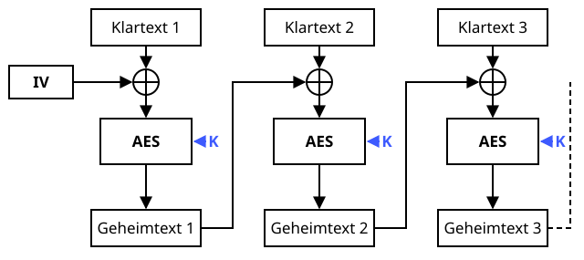

AES-Verschlüsselung
Schutzziele: Vertraulichkeit
Das Grundnahrungsmittel jeder modernen Krypto-Küche.
Definition
Der Advanced Encryption Standard (AES) ist ein symmetrisches Blockverschlüsselungsverfahren: Sender und Empfänger benutzen denselben geheimen Schlüssel mit 128, 192 oder 256 Bit. AES verschlüsselt Blöcke von 16 Byte in mehreren Runden. Das Verfahren wurde von Joan Daemen und Vincent Rijmen als „Rijndael“ entwickelt und ist seit 2001 der Standard der US-Behörde NIST.
Zutaten
- Klartext
- Geheimer Schlüssel mit 128, 192 oder 256 Bit aus einem sicheren Zufallsgenerator
- Ein Betriebsmodus, z. B. CBC, CTR oder GCM
- Ein Initialisierungsvektor (IV), für jede Nachricht neu
Zubereitung
- Schlüssel zufällig erzeugen und sicher mit dem Empfänger teilen – zum Beispiel per Diffie-Hellman.
- Für jede Nachricht einen neuen IV erzeugen (bei CBC zufällig, bei CTR und GCM ein einmaliger Zähler- bzw. Nonce-Wert).
- Den Klartext in 16-Byte-Blöcke aufteilen. Bei CBC wird der letzte Block aufgefüllt (Padding); CTR und GCM brauchen das nicht.
- Jeden Block in 10 bzw. 14 Runden aus SubBytes, ShiftRows, MixColumns und AddRoundKey verschlüsseln. Der Betriebsmodus verkettet die Blöcke miteinander.
- IV und Geheimtext verschicken. Der IV ist nicht geheim.
- Der Empfänger entschlüsselt mit demselben Schlüssel und dem IV.
Skizze

AES im CBC-Modus: Jeder Klartextblock wird vor der Verschlüsselung mit dem vorherigen Geheimtextblock XOR-verknüpft (⊕), der erste mit dem IV. Alle Blöcke nutzen denselben geheimen Schlüssel K (blau).
Skizze erstellt von Claude (KI)
Demo
Platzhalter für die Demo
Tipps
- Niemals den ECB-Modus verwenden: Gleiche Klartextblöcke ergeben dort gleiche Geheimtextblöcke (berühmtes Beispiel: der verschlüsselte Linux-Pinguin bleibt erkennbar).
- AES allein schützt nur die Vertraulichkeit. Wer auch Integrität will, nimmt AES-GCM.
- Ein Passwort ist kein Schlüssel – erst mit einer Schlüsselableitung (PBKDF2, Argon2) daraus einen machen.
- Nie selbst implementieren, sondern geprüfte Bibliotheken nutzen (z. B. die Web Crypto API im Browser).